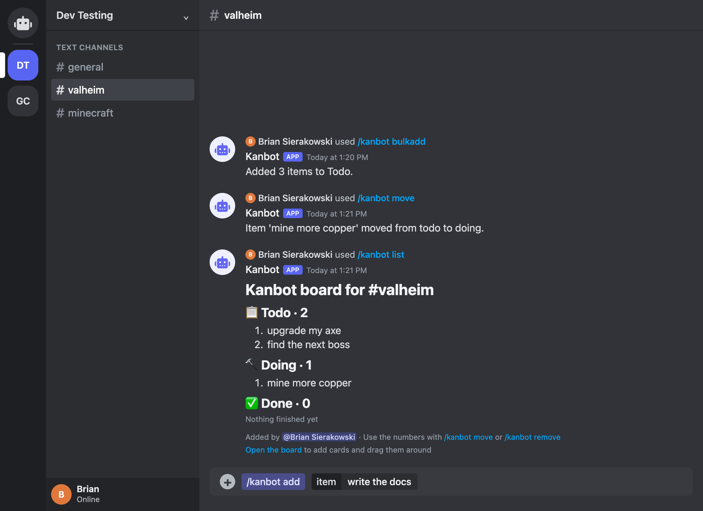

Kanbot keeps a shared kanban board for every Discord channel, so your group always knows what's todo, doing, and done. Just type /kanbot to add, move, and check off items.

Every channel gets its own board. There's nothing to set up once Kanbot is installed, so just start typing.
Add Kanbot to your Discord server. It only adds the /kanbot command, and it doesn't read your messages.
/kanbot in any channelType /kanbot and pick a command. Discord shows you each option as you go, and everyone in the channel sees the same board.
/kanbot list ends with a link to a kanban board for the channel, where you can add cards and drag them between todo, doing, and done.
/kanbot list/kanbot add/kanbot bulkadd/kanbot move/kanbot remove/kanbot help